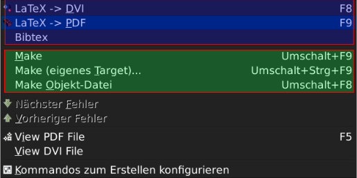
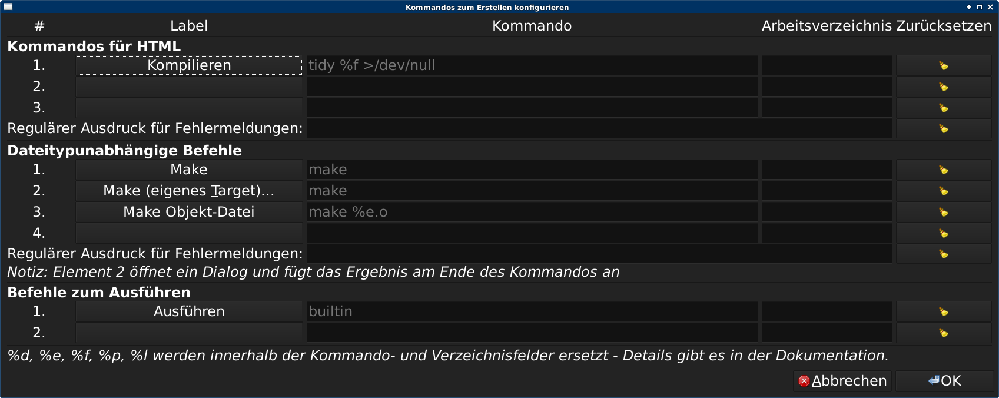

- Allgemeines
- Syntaxhighlighting
- Symbol Browser und Standard Seitenleiste
- Das Build Menu
- Datei-Vorlagen und andere Templates
- Codeschnipsel bzw. Snippets
- Autovervollständigung und Tag-Dateien
- Externe Werkzeuge
- Plugins
Zielgruppe/Zielstellung
- Aufzeigen von Funktionen, mit denen man effizient (in Geany) programmieren kann
- Kein HowTo, wie Geany wie Eclipse oder Visual* funktioniert
- Zielgruppe: Nutzer von Geany oder solche, die es werden wollen
- Keine Lesung der Dokumentation
Über Geany
- Editor mit Funktionen einer Entwicklungsumgebung (IDE)
- Entwicklung seit 2005
- Aktuelle Version 1.24.1 aus April 2014
- Ziel: Geringe Systemanforderungen und wenige
Abhängigkeiten zu anderen Paketen
- Realisiert in C mit Teilen in C++
- Basierend auf Scintilla und Gtk2 (2.24)
bzw. Gtk3 (experimental)
- Lizenz: GPLv2+
Über mich
- Proffesioneller Nerd mit wirtschaftlichen Hintergrund in einer Datenbank-Firma
- Nutzer von Geany seit knapp 10 Jahren
- Maintainer der Plugins
- Übersetzungskoordinator
Syntexhervorhebung
- Für mehr als 40 Dateitypen vorhanden
- Aus dem Scintilla-Projekt
- über sog. Lexer, in C++ geschriebene Klassen
- Automatische Erkennung über
- ... Dateiendung
- ... Spezielle Charakteristika z.B. Shebang
- Manuelles Setzen
- ... beim Laden
- ... über Menü
Custom Filetypes
- Möglichkeit zur Erweiterung mit eigenen Dateitypen
- Einfach: Neue Konfiguration für existierenden Lexer
- Schwieriger: Eigener Lexer für Scintilla
Konfigurationsdateien für Dateitypen
Darüber können u.a. konfiguriert werden
- Keywords einer Sprache
- Optionen für den Lexer
- Zeichen für Auskommentierungen
- Farben und Stile für Syntaxhervorhebung
- ....
Symbol-Browser und standard Seitenleiste
Symbolbrowser
- Listet wichtige Variablen, Funktionen auf
- Einfache Navigation mit z.B. Maus
- Aktualisierung entweder beim Speichern ODER beim Tippen
Dokumentenliste
- Listet alle geöffneten Dokumente auf
- Optional mit kompletten Pfad
Inhalte des Erstellen-Menüs
- Besteht aus Dateityp-abhängigen und -unabhängigen Einträgen
- Kann angepasst werden
- Kann Projekt-spezifische Kommandos beinhalten

Kommandos zum Erstellen konfigurieren

... oder direkt in der Dateityp-Defintions-Konfigurations-Datei
Erweitertes Beispiel: pylint
- Für die Befehle können Filter hinterlegt werden
- Gut geeignet, um "Linter" zu inkludieren
- Im Wiki gibt eine Anleitung dazu
Datei-Vorlagen und andere Templates
Templates
- Sparen Arbeit beim Tippen von immer gleichen Sachen
- Viele Beispiele vorhanden:
- ChangeLog-Eintrag
- Datein-Header
- Funktionsbeschreibung
- Short GPL notice
- Short BSD notice
- Datei templates
- Beispiele können für den Nutzer überschrieben werden
Verfügbare Platzhalter (Auswahl)
- Name:
developer
- Datum:
datetime
- Dateiname:
filename
- Ausgabe eines Kommandos:
command:kommando
- GPL:
gpl
Datei-Templates
- Für oft genutzte Standardaufgaben
- Geany stellt eine Auswahl bereit
- Eigene Templates ablegen unter
~/.config/geany/templates/files
Codeschnipsel bzw. Snippets
Snippets
- Wiederkehrende Textpassage können mit "Abkürzung" versehen werden
- Generische Schnipsel sowie Dateityp-spezifische
- Konfiguration über Konfigurationsdatei
- Über Werkzeuge-Menü zu erreichen
- Beispiele gibt es im Wiki->Snippets
Autovervoll-ständigung und Tag-Dateien
Funktionsweise
- Kombination aus statischen Ansatz + aktuelle Sitzung
- Konfigurierbar:
- ... wieviele Buchstaben für Vorschläge
- ... häufige Wörter ebenfalls vorgeschlagen werden (LaTeX, HTML)
- Statische "Tags" werden aus Datei geladen
- Dateityp-spezifisch
- Im Wiki->Tags Liste mit vielen verfügbaren Tag-Dateien
Tag-Dateien selbst erstellen
Ein Beispiel für die Geany-Header:
geany -g -P geany.c.tags /usr/local/include/geany/*.h
Externe Werkzeuge
- Manches können externe Werkzeuge besser
- Verschiedene Möglichkeiten
- Auswahl senden an ...
- Kontextaktionen für das aktuelle Wort
Sonstige Formatierungs-helferlein
- Große Zahl vorgefertigter Funktionen
- Automatische Einrückung bei Funktionen
- Bearbeiten -> Format
- Mit Tastenkürzel zu nutzen
- Rest: -> Externe Werkzeuge
Pluginschnittstelle
- Viele verschiedene Plugins
- Schnittstelle in C, Python und Lua
- Beispiele:
- GeanyVC
- git-changebar
- Projekctorganizer
- Addons
- DevHelp
- Webhelper
GeanyVC
- Generische Anbindung an z.B. SVN, git, hg, cvs
- Unterstützt:
- blame
- commit (kein push)
- diff (auch mit externen Werkzeug)
- Status
- rm/add
git-changebar
- Neues Plugin (ab 1.25)
- Markiert Zeilen, die gegenüber dem git-Stand geändert wurden
Projekctorganizer
- Erweitert Geanys Minimalen Projektansatz
- Konfigurationsmöglichkeit für im Projekt verwendete Parameter wie
- Bietet Möglichkeit projektspezifische-Tag-Dateien zu erstellen
Addons (Erweiterungen)
- Sammlung von kleinen Erweiterungen
- Beispiele:
- XMLTagging
- Anzeige von Lesezeichen in der Seitenleiste
- Liste mit TODO und Fixme
DevHelp
- Bindet DevHelp in Geany ein
- Einfacher Zugriff auf die Dokumentation
- Integriertes Browserfenster zum "stöbern"
Webhelper
- (einfacher) Webbrowser im Kontext von Geany
- Sehr praktisch bei Entwicklung von Webanwendungen (Django, CSS)
- Kann gegebene Seite beim Speichern einer Datei neuladen
- Basiert auf WebKit
SpellChecker (Rechtschreibprüfung
- Bindet Rechtschreibprüfung ein
- Unterstützt Aspell-, Myspell-, Hunspell-, ... Wörterbücher
- Kann Fehler beim Tippen markieren
- Korrekturvorschläge im Editor-Menü
Kontakt
Am besten via geany.org
oder gleich noch am Stand
Bis später!